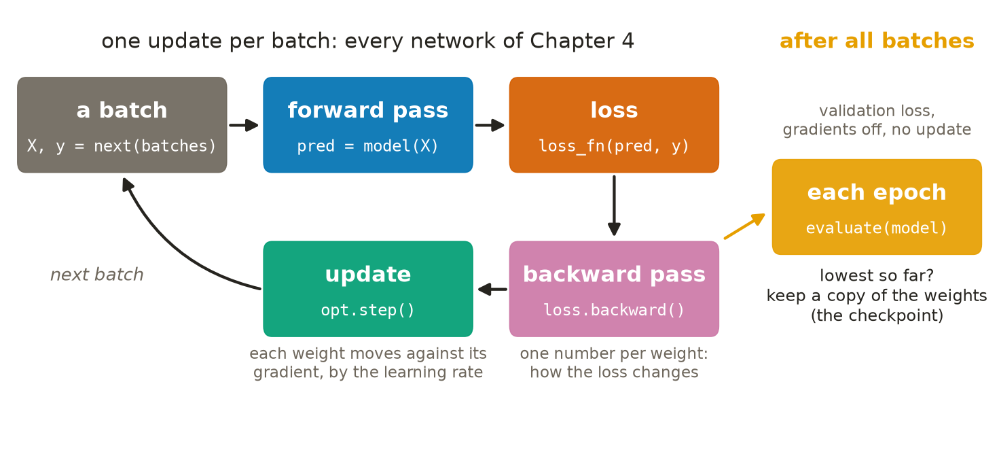
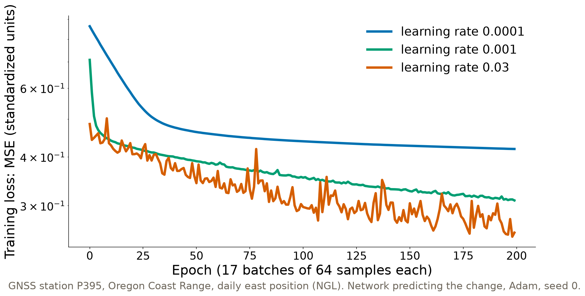
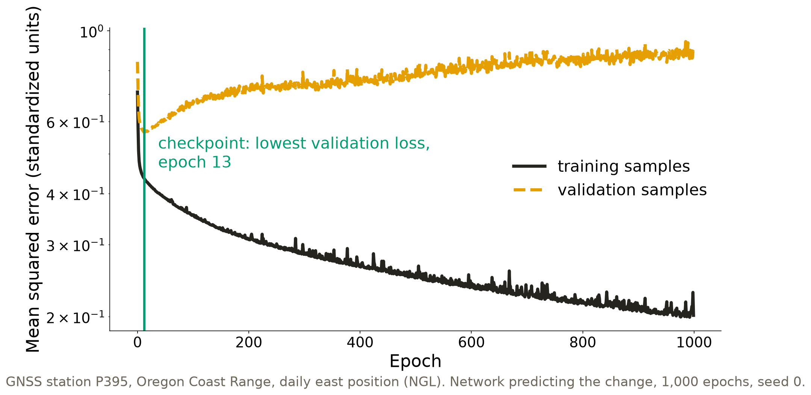

Training and evaluating any network:
one loop, one leaderboard
Session 24 · Wed Nov 25 · Book section 4.7
🏁
The question of this deck
Every network of Chapter 4 is trained by the same loop and judged by the same table.
How do we train a network, and how do we publish a score that others can trust?
Lab: 4.7 Training and evaluating a network · rubric: 4.7, continued · a reference deck, updated as the course goes
Four canonical networks, one way to train them

The data choose the network. The loop that trains it and the table that judges it are the same for all four.
Part 1. Training: one loop for every network

Four lines per batch, one check per epoch. A fully connected, convolutional, recurrent, attention or graph network changes only model.
The loop in code
torch.manual_seed(0) # seeded random starting weights
model = make_model()
opt = torch.optim.Adam(model.parameters(), lr=1e-3)
best = float("inf")
for epoch in range(n_epochs):
model.train()
for X, y in train_loader: # one update per batch
opt.zero_grad()
loss = loss_fn(model(X), y) # mean loss over the batch
loss.backward() # one gradient per weight
opt.step() # the update
model.eval()
with torch.no_grad(): # validation: no gradient, no update
val = sum(loss_fn(model(X), y).item() for X, y in val_loader) / len(val_loader)
if val < best: # the checkpoint
best, best_state = val, copy.deepcopy(model.state_dict())
model.load_state_dict(best_state)Before the first epoch: four checks
| Check | What goes wrong without it | Rubric |
|---|---|---|
| Split along how the model will be used | a random split leaks neighbors into validation | A3, A4 |
| Scale with training statistics only | the validation set leaks into training | A5 |
| A baseline that learns nothing | no number to beat | A6 |
| Print the ranges of X and Y | the network extrapolates, silently | A7 |
The loss fits Y and its errors
| Y | Last layer | Loss (rubric D2) |
|---|---|---|
| a class | one score per class | cross-entropy |
| a rare class | one score per class | cross-entropy with class weights |
| a number, Gaussian errors | one number | squared error |
| a number, heavy tails | one number | absolute error, Huber |
| a number with its σ | one number | squared error × 1/σ² |
Start from seeded random weights

Random, so that the neurons of a layer differ; seeded, so that the run can be repeated. Never zeros: every neuron would get the same gradient.
The learning rate sets how fast the loss falls

Adam, same network, same seed. 0.0001 crawls, 0.001 descends, 0.03 jumps. Start at 0.001 and look at the curve.
Stop at the lowest validation loss

Training loss falls for 1,000 epochs; validation loss is lowest at epoch 13. Keep those weights: the checkpoint.
Read the two curves
| Training loss | Validation loss | Diagnosis | First fix |
|---|---|---|---|
| high, flat | high, flat | learns nothing | learning rate; check the inputs |
| jumps | jumps | learning rate too large | divide it by 3 to 10 |
| falls | falls with it | still learning | more epochs |
| falls | lowest, then rises | overfitting | checkpoint; smaller network; dropout |
| low | far above, from the start | validation unlike training | the split, the ranges (A4, A7) |
The training checklist, for any network
| Step | Practice | Rubric |
|---|---|---|
| Before | split, scale, baseline, ranges | A3–A7 |
| Start | seeded random weights | D1 |
| Loss | fits Y and its errors; class weights if unbalanced | D2, D3 |
| Optimizer | Adam at 0.001; look at the curve | D5 |
| Stop | lowest validation loss; checkpoint | D4, D6 |
| Repeat | three seeds | D7 |
Part 2. Evaluating: one run is one draw

Predicting the position: 1.15 to 4.60 mm over three seeds. Predicting the change: 0.70 to 0.73 mm. A gap inside the spread is a tie.
A leaderboard is a contract
| Fixed before any model | Why |
|---|---|
| the split, and who holds the test set | a score on data used for choices is not a test |
| one metric, in physical units | mm, °C, accuracy per class: readers compare |
| baseline rows: no learning, classical | the score means nothing without them |
| three seeds; mean and spread | a gap inside the spread is a tie |
| weights and training time per row | the cost of each point of skill |
| the test set is scored once | after every choice, on validation (D8) |
A leaderboard: P395, 30 days ahead
| Model | Weights | Test error (mm), 3 seeds |
|---|---|---|
| linear regression | 7 | 0.63 |
| network on the change, absolute error | 1,313 | 0.70 ± 0.01 |
| network on the change, Huber | 1,313 | 0.72 ± 0.01 |
| network on the change, squared error | 1,313 | 0.73 ± 0.02 |
| persistence | 0 | 1.02 |
| network on the position | 1,313 | 2.45 ± 1.88 |
The linear model wins; the three losses tie; predicting the position loses to doing nothing.
Public score, hidden score
| Leaderboard | Public holdout | Hidden holdout | Graded on |
|---|---|---|---|
| source classification (3.5) | scored by CI on each pull request | instructor’s test set | hidden |
| CO₂ forecast (4.9, track A) | NOAA months, public | none | not graded |
| synthetic GNSS forecast (4.9, track B) | none | private seed | hidden |
A holdout that anyone can see is a diagnostic. A gap between the public and the hidden score is the overfitting signal.
Publish your leaderboard in code
rows = []
for name, make_model in models.items():
for seed in (0, 1, 2):
torch.manual_seed(seed)
model = make_model()
train(model, train_loader, val_loader) # the loop of part 1
rows.append(dict(model=name, seed=seed,
weights=sum(p.numel() for p in model.parameters()),
score=evaluate(model, val_loader)))
for name, score in baselines.items(): # rows that learn nothing
rows.append(dict(model=name, seed=0, weights=0, score=score))
board = (pd.DataFrame(rows).groupby("model")
.agg(weights=("weights", "first"), mean=("score", "mean"), spread=("score", "std"))
.sort_values("mean"))
print(board.round(2).to_markdown())The evaluation checklist, for any network
| Step | Practice | Rubric |
|---|---|---|
| Units | error in mm, °C, s; per class for a classifier | E1, E2 |
| Baselines | rows of the same table, same split | A6 |
| Spread | three seeds; gaps inside it are ties | D7, E3 |
| Physics | error against SNR, distance, season, lead time | E4 |
| Test | once, after every choice | D8 |
| Deploy | one test along the deployment axis | E5 |
Four networks, one loop, one leaderboard
Choose the row from the data. Train it with the loop, judge it on the leaderboard, beside the baseline of its last column.
ESS 469/569 · Machine Learning in the Geosciences · Autumn 2026